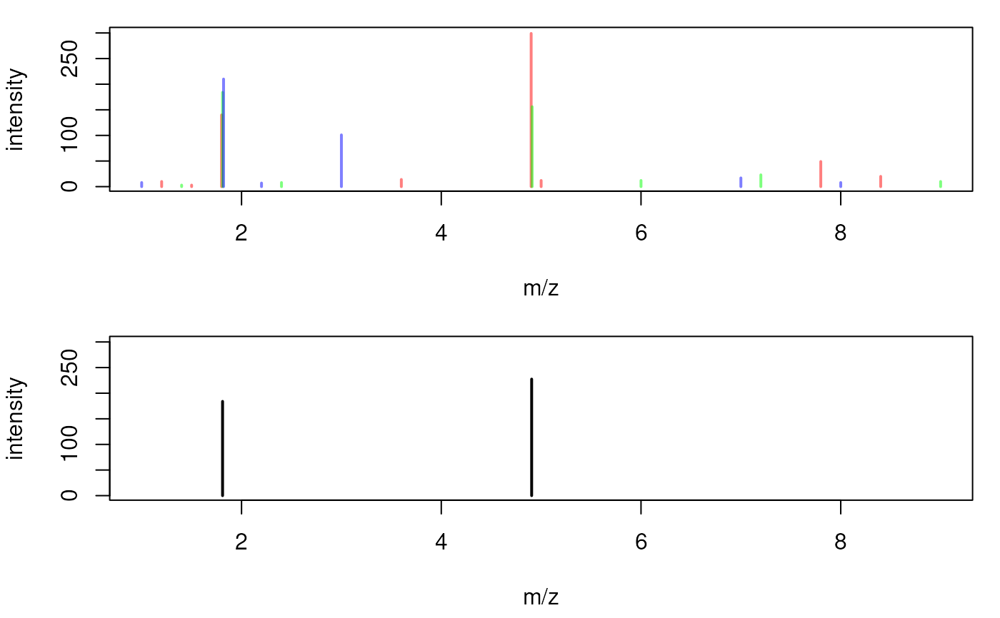

consensusSpectrum takes a list of spectra and combines them to a
consensus spectrum containing mass peaks that are present in a user
definable proportion of spectra.
numeric(1) defining the maximal m/z difference below which
mass peaks are grouped in to the same final mass peak (see details for
more information). Defaults to 0; see meanMzInts() for estimating
this value from the distribution of differences of m/z values from the
spectra. See also parameter ppm below for the definition of an m/z
dependent peak grouping.
numeric(1) defining the minimal proportion of spectra in
which a mass peak has to be present in order to include it in the
final consensus spectrum. Should be a number between 0 and 1 (present in
all spectra).
function (or name of a function) to be used to define
the intensity of the aggregated peak. By default the median signal for
a mass peak is reported.
function (or name of a function) to be used to define the
intensity of the aggregated peak. By default the median m/z is reported.
Note that setting weighted = TRUE overrides this parameter.
numeric(1) allowing to perform a m/z dependent grouping of mass
peaks. See details for more information.
logical(1) whether the m/z of the aggregated peak
represents the intensity-weighted average of the m/z values of all peaks
of the peak group. If FALSE (the default), the m/z of the peak is
calculated with mzFun.
additional arguments to be passed to intensityFun.
Peaks from spectra with a difference of their m/z being smaller than mzd
are grouped into the same final mass peak with their intensities being
aggregated with intensityFun. Alternatively (or in addition) it is
possible to perform an m/z dependent grouping of mass peaks with parameter
ppm: mass peaks from different spectra with a difference in their m/z
smaller than ppm of their m/z are grouped into the same final peak.
The m/z of the final mass peaks is calculated with mzFun. By setting
weighted = TRUE the parameter mzFun is ignored and an intensity-weighted
mean of the m/z values from the individual mass peaks is returned as the
peak's m/z.
Other spectra combination functions:
meanMzInts()
library(MSnbase)
## Create 3 example spectra.
sp1 <- new("Spectrum2", rt = 1, precursorMz = 1.41,
mz = c(1.2, 1.5, 1.8, 3.6, 4.9, 5.0, 7.8, 8.4),
intensity = c(10, 3, 140, 14, 299, 12, 49, 20))
sp2 <- new("Spectrum2", rt = 1.1, precursorMz = 1.4102,
mz = c(1.4, 1.81, 2.4, 4.91, 6.0, 7.2, 9),
intensity = c(3, 184, 8, 156, 12, 23, 10))
sp3 <- new("Spectrum2", rt = 1.2, precursorMz = 1.409,
mz = c(1, 1.82, 2.2, 3, 7.0, 8),
intensity = c(8, 210, 7, 101, 17, 8))
spl <- MSpectra(sp1, sp2, sp3)
## Plot the spectra, each in a different color
par(mfrow = c(2, 1), mar = c(4.3, 4, 1, 1))
plot(mz(sp1), intensity(sp1), type = "h", col = "#ff000080", lwd = 2,
xlab = "m/z", ylab = "intensity", xlim = range(mz(spl)),
ylim = range(intensity(spl)))
points(mz(sp2), intensity(sp2), type = "h", col = "#00ff0080", lwd = 2)
points(mz(sp3), intensity(sp3), type = "h", col = "#0000ff80", lwd = 2)
cons <- consensusSpectrum(spl, mzd = 0.02, minProp = 2/3)
## Peaks of the consensus spectrum
mz(cons)
#> [1] 1.810 4.905
intensity(cons)
#> [1] 184.0 227.5
## Other Spectrum data is taken from the first Spectrum in the list
rtime(cons)
#> [1] 1
precursorMz(cons)
#> [1] 1.41
plot(mz(cons), intensity(cons), type = "h", xlab = "m/z", ylab = "intensity",
xlim = range(mz(spl)), ylim = range(intensity(spl)), lwd = 2)
